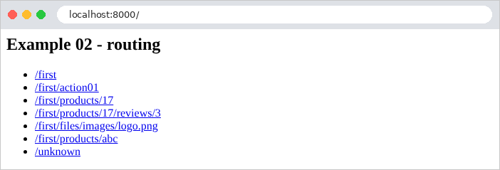
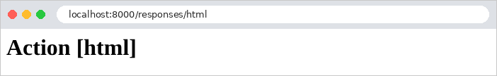
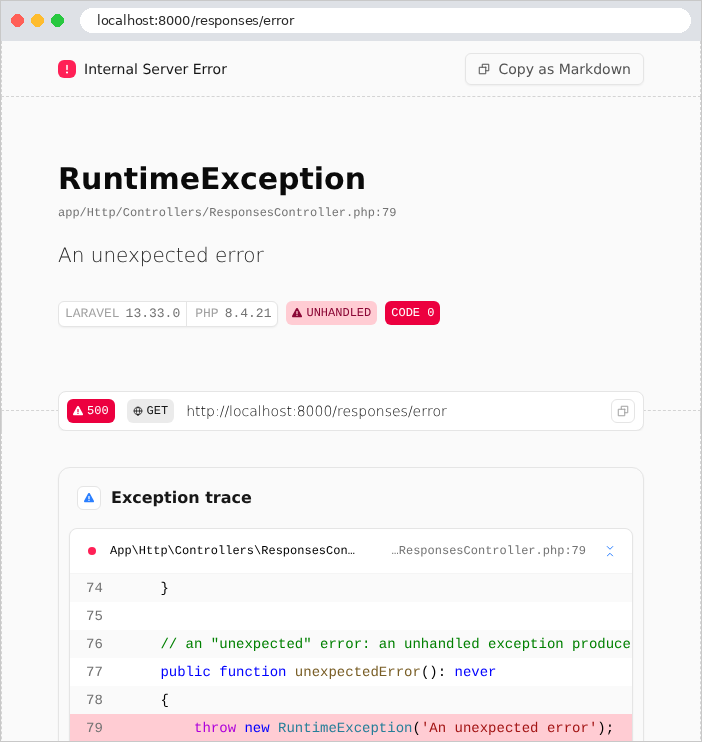

2. Acciones, enrutamiento, respuestas
Este capítulo examina el camino que sigue una solicitud, desde el navegador hasta la acción que la procesa, y la respuesta que esa acción devuelve. Las vistas no se tratarán hasta el Capítulo 4: aquí, las acciones devuelven texto o JSON directamente.
2.1. Ejemplo 01: la estructura de una aplicación Laravel
El primer ejemplo es la aplicación [Laravel] más pequeña posible. Un proyecto creado con [composer create-project laravel/laravel] contiene unos cincuenta archivos y carpetas (consulte la introducción); aquí conservaremos solo aquellos de los que la aplicación no puede prescindir:
- [public/index.php]: el punto de entrada de la aplicación. Todas las solicitudes HTTP, sea cual sea su URL, las procesa este archivo. La carpeta [public] es la única que sirve el servidor web: contiene además los archivos estáticos (hojas de estilo, imágenes, scripts), y solo esos;
- [bootstrap/app.php]: la construcción y la configuración de la aplicación. La carpeta [bootstrap/cache] recibe archivos que [Laravel] calcula por sí mismo para iniciarse más rápido;
- [routes/web.php]: la tabla de enrutamiento, que asocia cada URL con la acción que la procesa;
- [storage]: los archivos que la aplicación escribe durante su funcionamiento: el registro de errores ([storage/logs]), las sesiones, la caché y las vistas compiladas ([storage/framework]);
- [.env]: la configuración de la aplicación, en forma de pares [NAME=value];
- [artisan]: la herramienta de línea de comandos de [Laravel];
- [composer.json]: la descripción del proyecto para [Composer].
2.1.1. El punto de entrada: public/index.php
- Línea 1: un archivo [PHP] comienza con la etiqueta [<?php]. Todo lo que sigue es código [PHP]; un archivo que contiene solo código no cierra esta etiqueta;
- línea 2: un comentario, desde [//] hasta el final de la línea ([/* ... */] delimita un comentario de varias líneas);
- línea 4: la instrucción [use] importa el nombre de una clase. El nombre completo de una clase [PHP] incluye su espacio de nombres (*namespace*), el equivalente de los paquetes en [Java]: [Illuminate\Http\Request] es la clase [Request] en el espacio de nombres [Illuminate\Http]. Después de [use], en el archivo basta con llamarla [Request]. [Illuminate] es el nombre en clave de los componentes de [Laravel];
- Línea 7: [require] ejecuta otro archivo [PHP]. [__DIR__] es el directorio del archivo actual (aquí, [public]); el operador [.] concatena dos cadenas. El archivo [vendor/autoload.php], escrito por [Composer], instala el cargador de clases: la primera vez que se usa una clase, encuentra y carga el archivo que la define. Gracias a esto, nunca tenemos que escribir un [require] para los archivos de clases. La carpeta [vendor] es la misma que la carpeta [examples], compartida por todos los ejemplos (consulte la introducción): de ahí las dos referencias [..];
- Línea 10: un archivo ejecutado por [require] puede devolver un valor mediante la instrucción [return]: [bootstrap/app.php] devuelve la aplicación —un objeto de la clase [Illuminate\Foundation\Application]— almacenada en la variable [$app]. En [PHP], los nombres de variable siempre comienzan con [$]. [require_once] no haría nada si el archivo ya se hubiera ejecutado;
- línea 11: [Request::capture()] llama al método estático [capture] de la clase [Request] (el operador [::] hace referencia a un miembro de una clase, mientras que el operador [->] hace referencia a un miembro de un objeto). Crea un objeto [Request] a partir de la solicitud HTTP recibida por [PHP]. [$app->handleRequest(...)] hace que la aplicación procese esta solicitud y envía la respuesta al navegador.
Este archivo es el mismo en todos los ejemplos y —salvo por dos [..] archivos— es igual al de un proyecto [Laravel] estándar. Pone de relieve una particularidad de [PHP], que explica mucho sobre [Laravel]: la aplicación se reconstruye con cada solicitud. El servidor web ejecuta [public/index.php] de principio a fin por cada solicitud que recibe: carga las clases, construye la aplicación, procesa la solicitud, envía la respuesta y luego lo olvida todo. Ningún objeto sobrevive de una solicitud a la siguiente. En el capítulo sobre los ámbitos de datos, veremos las consecuencias de este comportamiento, que es lo opuesto al de [Java], [C#] o [Python], cuyas aplicaciones permanecen en memoria entre solicitudes.
2.1.2. La estructura de la aplicación: bootstrap/app.php
- Línea 7: el cargador de clases de [Composer] conoce las clases de las bibliotecas ubicadas en la carpeta [vendor]. También debe conocer las clases de la aplicación, que por convención se almacenan en su carpeta [app], bajo el espacio de nombres [App]. En un proyecto estándar, [Composer] obtiene esta información del archivo [composer.json] del proyecto. Nuestros ejemplos comparten una única carpeta llamada [vendor], pero cada uno tiene su propia carpeta llamada [app]: por lo tanto, cada ejemplo se la declara al cargador por sí mismo, mediante su método [addPsr4] (el estándar [PSR-4] asocia espacios de nombres con carpetas: la clase [App\Http\Controllers\FirstController] está en el archivo [app/Http/Controllers/FirstController.php]). Un [require] devuelve el valor del archivo ejecutado; [vendor/autoload.php] devuelve el cargador (lo instala una sola vez, aunque se ejecute dos veces). En una cadena entre comillas simples, [\\] representa un solo carácter, [\]. Este ejemplo todavía no tiene una carpeta [app]: la línea está ahí para los siguientes;
- línea 9: la construcción de la aplicación. [Application::configure(...)] devuelve un objeto constructor (*builder*), cada uno de cuyos métodos configura un aspecto de la aplicación y devuelve el propio constructor, lo que permite encadenar llamadas; [create()] construye finalmente la aplicación. El parámetro [basePath: dirname(__DIR__)] es un parámetro con nombre: el valor se asocia al parámetro [basePath] por su nombre, no por su posición. [dirname(__DIR__)] es la carpeta padre de [bootstrap], es decir, la carpeta del ejemplo: a partir de esta carpeta [Laravel] ubica todas las demás ([routes], [storage]...);
- Línea 11: las rutas de la aplicación son las del archivo [routes/web.php]. El nombre [web] es significativo: estas rutas reciben el middleware del grupo [web] (sesiones, cookies cifradas, protección anti-CSRF, etc.), adecuado para una aplicación que genera páginas HTML. Lo encontraremos a lo largo de los capítulos;
- líneas 13–14: el middleware y el manejo de excepciones, con su configuración predeterminada. Los ampliaremos en los siguientes ejemplos.
2.1.3. La tabla de enrutamiento: routes/web.php
- línea 4: importación de la clase [Route]. Es una fachada de [Laravel]: una clase cuyos métodos estáticos ([Route::get]) reenvían la llamada a un objeto de la aplicación, en este caso el enrutador. Las fachadas son una de las señas de identidad de [Laravel]: ofrecen acceso rápido a los servicios de la aplicación sin tener que obtener el objeto que los proporciona;
- Líneas 7–10: [Route::get] declara una ruta: las solicitudes [GET /] las atenderá la función indicada como segundo parámetro. Esto es el enrutamiento. Esta función no tiene nombre: es una función anónima —un valor como cualquier otro— que se puede pasar como parámetro. La función asociada a una ruta es una acción. También existen [Route::post], [Route::put], [Route::delete]...;
- línea 9: la acción devuelve una cadena. El valor devuelto por una acción es la respuesta enviada al navegador: [Laravel] la coloca en el cuerpo de la respuesta HTTP. Una cadena entre comillas simples (['...']) se escribe tal cual; entre comillas dobles (["..."]), las variables que contiene se reemplazan por sus valores (p. ej., 02).
2.1.4. Configuración: .env
El archivo [.env] contiene la configuración específica de una instalación determinada de la aplicación: la misma aplicación, instalada en la máquina de un desarrollador y en un servidor de producción, no tendrá el mismo [.env]. Además, este archivo no debe publicarse junto con el código fuente (contiene secretos). Las líneas que comienzan con [#] son comentarios.
- Línea 2: el nombre de la aplicación. [Laravel] lo usa, por ejemplo, para nombrar la cookie de sesión ([example01_session], más abajo);
- línea 4: el entorno: [local] para desarrollo, [production] en un servidor;
- línea 6: la clave secreta de la aplicación: 32 bytes aleatorios, codificados en base 64. [Laravel] la usa para cifrar las cookies y firmar ciertos datos (volveremos sobre esto). La crea el comando [php artisan key:generate], que la escribe en el archivo [.env]; cada ejemplo tiene la suya. Sin ella, la aplicación se niega a iniciar (“No application encryption key has been specified”);
- línea 8: el modo de depuración: una excepción no controlada muestra una página detallada (consulte el Ejemplo 03). Este modo está destinado al desarrollo, y solo al desarrollo: la página de error revela el código fuente y la configuración de la aplicación;
- Líneas 10–11: las sesiones y la caché (consulte el capítulo sobre ámbitos) se almacenan en archivos dentro de la carpeta [storage]. De forma predeterminada, [Laravel] las almacena en una base de datos, que todavía no tenemos.
Todo lo que [Laravel] no encuentre en [.env] conserva su valor predeterminado. Estos valores predeterminados los definen los archivos de configuración del framework ([vendor/laravel/framework/config/*.php]); un proyecto estándar tiene una copia de ellos en su carpeta [config], que se puede modificar. Nuestros ejemplos prescinden de ellos: unas pocas líneas de [.env] bastan.
2.1.5. La herramienta artisan y el archivo composer.json
El archivo [artisan] es un script [PHP] que construye la aplicación, igual que [public/index.php], pero para ejecutar un comando en lugar de procesar una solicitud:
- Línea 1: en [Linux] y [macOS], esta línea permite ejecutar el archivo directamente ([./artisan]); en [Windows], siempre se ingresa [php artisan];
- Línea 13: [ArgvInput] representa los parámetros de la línea de comandos ([serve], [route:list]...); [handleCommand] ejecuta el comando y devuelve su código de salida.
[php artisan list] muestra la lista de comandos disponibles: unos cien, de los cuales usaremos algunos. Por último, el archivo [composer.json] describe el ejemplo:
Este es un documento JSON. [Laravel] lee de este archivo el espacio de nombres de las clases de la aplicación ([App\], ubicado en la carpeta [app/]), lo que necesita, por ejemplo, para distinguir el código de la aplicación del código del framework en sus páginas de error. El archivo [composer.json] de un proyecto estándar también contiene la lista de sus bibliotecas; en los ejemplos, esta lista está en el archivo [examples/composer.json] (consulte la introducción).
2.1.6. Ejecución
En una ventana de terminal abierta en la carpeta [01-structure], escriba [php artisan serve]. [Laravel] muestra:
El comando [serve] inicia el servidor de desarrollo integrado en [PHP] ([php -S]), que está configurado para reenviar todas las solicitudes a [public/index.php] (excepto las solicitudes de archivos ubicados en la carpeta [public], que envía tal cual). Escucha en el puerto 8000 en la dirección [127.0.0.1], que es la dirección de la propia máquina ([localhost]): solo acepta solicitudes de esta máquina, lo que es adecuado para el desarrollo ([--host=0.0.0.0] lo abriría a otras máquinas de la red; [--port=8001] cambiaría el puerto). Se detiene con [Ctrl-C]. Este servidor está pensado para el desarrollo: en producción, será un servidor web como [Apache] o [Nginx], combinado con [PHP-FPM] (consulte el caso de estudio). No es necesario reiniciarlo después de un cambio en el código: como [PHP] vuelve a leer los archivos con cada solicitud, el cambio surte efecto en la siguiente solicitud. Solo un cambio en el archivo [.env] requiere un reinicio, que el comando [serve] realiza automáticamente.
Solicitemos la URL [http://localhost:8000/] con un navegador:

y luego con [curl]. La opción [-i] también muestra los encabezados HTTP de la respuesta:
La primera línea de la respuesta contiene la versión del protocolo, el código de estado (200) y su etiqueta ([OK]). A continuación vienen los encabezados: el host solicitado, [Connection: close] (el servidor de desarrollo cierra la conexión después de cada respuesta), la versión de [PHP], el tipo de contenido, una directiva de caché, la fecha y dos cookies. Una línea vacía separa los encabezados del cuerpo de la respuesta. En el resto de este documento, ya no reproduciremos los encabezados [Host], [Connection], [X-Powered-By], [Cache-Control] y [Date] —que no varían— ni las cookies, salvo cuando sean el tema del ejemplo.
El encabezado [Content-Type: text/html; charset=utf-8] indica que la respuesta es HTML, cuyos caracteres están codificados en UTF-8. Esta es la codificación predeterminada ([Laravel]) para cualquier cadena devuelta por una acción: por lo tanto, el navegador interpreta la cadena como HTML (aquí, al no tener etiquetas, se muestra tal cual). El Ejemplo 03 mostrará cómo especificar un tipo de codificación distinto.
Las dos cookies pueden sorprender: la aplicación no solicitó ninguna de ellas. Las establecen dos componentes de middleware del grupo [web] (consulte [bootstrap/app.php]): [example01_session] identifica la sesión del usuario, y [XSRF-TOKEN] contiene el token anti-CSRF. Sus valores están cifrados con la clave [APP_KEY]. Las examinaremos en los Ejemplos 20 y 21.
Por cada solicitud, la consola del servidor muestra una entrada de registro: la fecha, la ruta solicitada y el tiempo de procesamiento.
2.2. Ejemplo 02: enrutamiento
El enrutamiento asocia una URL y un método HTTP (GET, POST...) con una acción. Escribir todas las acciones en [routes/web.php] como funciones anónimas se volvería rápidamente ilegible; en su lugar, se organizan en clases: los controladores. El Ejemplo 02 tiene dos:
Los archivos [artisan], [public/index.php], [composer.json] y [.env], así como las carpetas [bootstrap/cache] y [storage], son los mismos que en el Ejemplo 01: no volveremos a mencionarlos (solo cambian el nombre del ejemplo y la clave secreta). Cada controlador es una clase del espacio de nombres [App\Http\Controllers], ubicada en la carpeta [app/Http/Controllers]: esta es la convención de [Laravel], y el estándar [PSR-4] hace corresponder ambos (Ejemplo 01).
2.2.1. El controlador HomeController
- línea 4: el espacio de nombres de la clase. Su nombre completo es, por lo tanto, [App\Http\Controllers\HomeController];
- línea 6: la clase. Por convención, el nombre de una clase se escribe con mayúscula al comienzo de cada palabra ([HomeController]), mientras que el nombre de un método o de una variable comienza con minúscula ([action01Post]). Un controlador de [Laravel] no necesita heredar de ninguna clase;
- línea 10: la acción [index], un método público de la clase (el enrutador solo puede llamar a métodos públicos). [: string] declara el tipo del valor devuelto: una cadena. Los tipos son opcionales en [PHP], pero cuando se especifican, [PHP] los verifica en tiempo de ejecución;
- líneas 12–23: una cadena de varias líneas. La sintaxis [<<<'HTML'] ... [HTML] (*nowdoc*) delimita texto que se escribe tal cual, entre dos líneas que contienen la misma palabra, en este caso [HTML]; la sangría de la línea de cierre se elimina de todas las líneas. La acción devuelve HTML, enviado con el tipo [text/html] (consulte el Ejemplo 01).
Así, la acción [index] devuelve una página HTML que contiene enlaces a las acciones del otro controlador:

2.2.2. El controlador FirstController
- líneas 9–11: el mismo método [index] que en el otro controlador: no hay conflicto, ya que cada controlador es una clase distinta;
- líneas 21–23: la acción para la solicitud [POST /first/action01]. El nombre de una acción puede ser cualquiera; es la tabla de enrutamiento la que la asocia con una URL y un método HTTP;
- líneas 28–30: el parámetro [$id] de la acción recibe el valor del parámetro de ruta [{id}] (consulte [routes/web.php]): para la URL [/first/products/17], es 17. El tipo de parámetro [int] indica a [PHP] que convierta el valor (una cadena, extraída de la URL) en un entero. Esto es el enlace de datos (data binding), que se tratará en detalle en el próximo capítulo. En la cadena entre comillas ["Product no. $id"], la variable [$id] se reemplaza por su valor: esto es la interpolación;
- líneas 34–36: dos parámetros de ruta, pasados a dos parámetros de la acción. [Laravel] los asocia por nombre: el orden de los parámetros de la acción no importa;
- líneas 40–42: un parámetro de ruta que contiene [/].
2.2.3. La tabla de enrutamiento: routes/web.php
- Líneas 4–5: importación de los dos controladores;
- Línea 9: la acción ya no es una función anónima, sino un arreglo con dos elementos: la clase del controlador y el nombre del método. [HomeController::class] es el nombre completo de la clase, como cadena (['App\Http\Controllers\HomeController']). Por cada solicitud [GET /], [Laravel] crea un objeto [HomeController] y llama a su método [index];
- línea 12: un grupo de rutas: las rutas declaradas en la función pasada a [group] comparten la configuración del grupo. [prefix('first')] antepone [/first] a sus rutas; [controller(FirstController::class)] les asigna su controlador, y cada ruta solo necesita nombrar su método. La URL de una acción es la concatenación del prefijo del grupo y la ruta de su ruta;
- línea 14: la ruta ['/'] hace referencia al propio prefijo: [GET /first];
- Líneas 16–18: la misma ruta, HTTP, corresponde a dos métodos: [GET] y [POST], que atienden dos acciones distintas. También existe [Route::match(['get', 'post'], ...)], para una acción que atiende varios métodos, y [Route::any], para todos ellos;
- Línea 21: [{id}] es un parámetro de ruta: este segmento de la URL puede tomar varios valores. De forma predeterminada, un parámetro acepta cualquier texto sin barra diagonal; [whereNumber('id')] restringe el parámetro para que contenga solo dígitos: de lo contrario, la ruta no coincide. También existen [whereAlpha] (letras), [whereUuid], [whereIn('id', [...])] (una lista de valores) y [where], que acepta una expresión regular;
- línea 23: dos parámetros de ruta, ambos con restricciones ([whereNumber] acepta un arreglo de nombres). En [PHP], [[a, b]] es un arreglo (*array*);
- línea 26: la restricción [where('path', '.*')] es una expresión regular: [.] representa cualquier carácter, y [*] representa su repetición. Por lo tanto, el parámetro acepta cualquier final de URL, incluido [/].
2.2.4. La configuración: bootstrap/app.php
- Líneas 11–15: esta vez, el método [withMiddleware] recibe una función, a la que [Laravel] llama pasándole el objeto [$middleware] que describe el middleware de la aplicación. [: void] indica que la función no devuelve nada. Lo usamos para omitir la protección anti-CSRF de las URL [/first/...]: esta protección, que examinaremos en el Ejemplo 21, rechaza cualquier solicitud POST que no provenga de un formulario de la aplicación, incluidas las que enviaremos con [curl]. El parámetro con nombre [except] especifica la lista de rutas que se excluyen, donde [*] representa cualquier secuencia de caracteres. Sin esta línea, la solicitud POST de [curl] recibiría una respuesta de error 419 (*Page Expired*).
2.2.5. Ejecución
Estas son las respuestas a algunas solicitudes:
Para enviar una solicitud POST, use la opción [-X POST] de [curl]:
Un método HTTP para el cual ninguna acción atiende esta ruta produce un error 405 ([Method Not Allowed]). El encabezado [allow] enumera los métodos aceptados; [Laravel] agrega [HEAD] (la misma solicitud que GET, sin el cuerpo de la respuesta), que él mismo atiende para cualquier ruta GET:
En modo de depuración, el cuerpo de la respuesta es la página de error detallada de [Laravel], que veremos en el Ejemplo 03: explica que el método PUT no es compatible con esta ruta (“The PUT method is not supported for route first/action01.” Supported methods: GET, HEAD, POST.”).
Por último, una URL que ninguna ruta atiende produce un error 404. Esto también ocurre con un identificador que no es un número: la restricción [whereNumber] impide que la ruta coincida con [/first/products/abc].
La respuesta es una página de error de [Laravel], en inglés. En un navegador:

El Capítulo 7 mostrará cómo reemplazarla por una página propia de la aplicación. Observe también que [Laravel] no distingue entre [/first] y [/first/]: el enrutador ignora la barra diagonal final, y ambas URL llevan a la misma acción.
El comando [php artisan route:list], ejecutado en el directorio del ejemplo, enumera todas las rutas de la aplicación:
Cada línea enumera los métodos HTTP, la ruta y la acción ([Controller@method]). Las dos últimas rutas, llamadas [storage.local] y [storage.local.upload], las crea [Laravel] mismo: sirven los archivos que la aplicación almacena en su carpeta [storage/app], siempre que vayan acompañados de una firma (una URL firmada, que solo la aplicación sabe generar). No las usaremos.
2.3. Ejemplo 03: respuestas de una acción
Lo que devuelve una acción determina la respuesta HTTP. El Ejemplo 03 repasa los casos principales:
La tabla de enrutamiento asocia cada URL [/responses/xxx] con la acción del controlador [xxx]:
El controlador [ResponsesController]:
Comentemos este código:
- Líneas 16–19: la función [response] construye una respuesta HTTP completa, que es un objeto [Illuminate\Http\Response] cuyo primer parámetro es el cuerpo. [Laravel] ofrece muchas funciones de este tipo, disponibles en todas partes, que llama “helpers”: [response], [redirect], [abort], [view], [collect]... El método [header] establece un encabezado de la respuesta —en este caso, su tipo: [text/plain] (texto sin formato). El navegador no interpretará las etiquetas. [header] devuelve la propia respuesta: las llamadas se encadenan una tras otra;
- líneas 23–25: la misma cadena, devuelta por sí sola: [Laravel] la envía con el tipo [text/html], y el navegador la interpreta;
- Líneas 29–31: [response()], llamada sin parámetros, devuelve una fábrica de respuestas, cuyo método [json] convierte su parámetro a JSON y genera una respuesta de tipo [application/json] (un objeto [JsonResponse]). La conversión la realiza la función [json_encode] de [PHP]: un objeto se convierte en un objeto JSON cuyos campos son las propiedades públicas del objeto. La clase [Person] se describe más abajo;
- líneas 35–37: aún más simple: una acción que devuelve un arreglo produce una respuesta JSON, sin llamar a [response()->json]. El arreglo [PHP] es una estructura de propósito general: [['lastName' => 'Martin', ...]] es un arreglo asociativo, donde cada elemento tiene una clave (aquí, ['lastName']); se convierte en un objeto JSON. Un objeto ordinario, en cambio, no puede devolverse por sí solo: [Laravel] intentaría convertirlo en una cadena, y la operación fallaría (“Object of class App\Models\Person could not be converted to string”); debe pasar por [response()->json];
- líneas 41–43: un arreglo con claves implícitas (0, 1, 2) es una lista; se convierte en un arreglo JSON;
- líneas 47–49: la función [collect] crea una [Laravel] colección —un objeto que envuelve un arreglo y ofrece un centenar de métodos para transformarlo— que luego se encadenan: [sort] ordena los elementos, [values] renumera las claves a partir de 0, y [map] aplica una función a cada elemento. [fn (int $n) => $n * 10] es una función flecha: una función anónima reducida a una expresión, cuyo valor devuelve. Una colección devuelta por una acción también se convierte en un arreglo JSON. Volveremos a las colecciones en el contexto de las bases de datos en el Capítulo 9;
- líneas 53–55: el segundo parámetro de [json] es el código de estado: 201 ([Created]) reemplaza a 200. Un tercer parámetro, opcional, proporcionaría encabezados: [['X-Example' => '03']];
- líneas 59–61: el código 204 ([No Content]) significa “nada que mostrar”: la respuesta no tiene cuerpo;
- líneas 65–67: un error “esperado”: una respuesta 404 ([Not Found]), con un cuerpo (JSON) elegido por la acción;
- líneas 71–73: el mismo error, generado por la función [abort]. [abort] no devuelve nada: lanza una excepción ([NotFoundHttpException], para el código 404), que termina la acción; [Laravel] la convierte en una respuesta de error. El tipo [never] indica que el método nunca termina normalmente. Esta es la forma más habitual de terminar una acción por un error, incluso en lo más profundo de una función llamada por la acción;
- líneas 77–79: un error “inesperado” —una excepción que nadie maneja— produce una respuesta 500 ([Internal Server Error]). La instrucción [throw] lanza una excepción; [RuntimeException] es una clase de excepción de la biblioteca estándar de [PHP], importada mediante un [use] (línea 10) como cualquier otra clase. La acción no se llama [exception], como en las otras versiones del curso: para [Laravel], una acción llamada ['exception'] haría referencia a la clase [Exception] de [PHP] (los nombres de clase no distinguen mayúsculas de minúsculas), y la ruta sería rechazada.
La clase [Person]:
- Línea 8: [readonly] hace que todas las propiedades de la clase no sean modificables una vez inicializadas: un objeto [Person] es inmutable;
- Líneas 10–14: [__construct] es el constructor de la clase, llamado por [new Person('Martin', 'Jean', 42)]. Sus parámetros, precedidos por [public], están promovidos: cada uno declara una propiedad del mismo nombre, inicializada con el parámetro. Esta sintaxis evita tener que declarar las propiedades y luego asignarlas una por una en el cuerpo del constructor (que aquí está vacío). Las propiedades son públicas: [json_encode] puede acceder a ellas.
Queda el archivo [bootstrap/app.php]:
- línea 15: se agrega a la aplicación un componente de middleware : la clase [ReadableJson], que se muestra a continuación.
De forma predeterminada, [Laravel] produce un JSON compacto, en una sola línea, en el que los caracteres no ASCII se escriben como secuencias de escape: [créée] se convierte en [créée], que es JSON válido, pero poco legible. Para los ejemplos de este curso, queremos un JSON legible. Un middleware es una clase cuyo método [handle]*** se llama en cada solicitud, *envuelto alrededor de la acción: [$next($request)] pasa la solicitud al resto de la aplicación (los demás middleware y luego la acción) y devuelve la respuesta (línea 17). El middleware puede entonces modificarla: si es una respuesta JSON (el operador [instanceof] verifica la clase de un objeto), cambia sus opciones de codificación: los caracteres no ASCII y las barras diagonales se escriben tal cual, y la salida se indenta (línea 21). El operador [|] combina las tres opciones, que son constantes de [PHP]. El capítulo sobre el ciclo de vida de la solicitud examinará el middleware en detalle; los ejemplos 05 a 12 reutilizan este.
En un navegador, se aprecia la diferencia entre [text/plain] y [text/html] :


Estas son las respuestas de las demás acciones:
El objeto se convirtió en un objeto JSON, con un campo por propiedad pública. La acción [/responses/array] produce exactamente la misma respuesta.
La respuesta de [abort] es la página de error 404 estándar de [Laravel], como se muestra en el Ejemplo 02. Nuestro mensaje no aparece allí: la página estándar solo muestra el código y su etiqueta. Sin embargo, sí aparece cuando el cliente solicita una respuesta JSON, mediante el encabezado [Accept: application/json] (opción [-H] de [curl]): [Laravel] adapta entonces sus respuestas de error, que se convierten en documentos JSON:
En modo de depuración, el documento JSON también contiene el nombre de la excepción, el archivo y la línea donde se lanzó, y la pila de llamadas (la lista de funciones que se estaban ejecutando en el momento del error). Sin modo de depuración, solo contiene el mensaje. El Capítulo 7 mostrará cómo mostrar el mensaje en una página de error personalizada.
Queda la excepción no controlada. En modo de depuración, el navegador muestra la página de error de [Laravel]: el tipo y el mensaje de la excepción, el archivo y la línea donde se lanzó, y luego la pila de llamadas —de la más reciente a la más antigua— con la línea de código correspondiente en cada una:

La primera entrada de la pila es nuestra acción, [unexpectedError], en la línea 79 del archivo [ResponsesController.php]. Más abajo, la página muestra la solicitud (sus encabezados y parámetros) y la aplicación (rutas y configuración): por eso el modo de depuración nunca debe habilitarse en un servidor accesible para otras personas. El botón “Copy as Markdown” copia la descripción del error, lista para pegarse en una pregunta a una IA. El error también se escribe en el registro de la aplicación, el archivo [storage/logs/laravel.log] (aquí solo mostramos el comienzo):
Sin modo de depuración ([APP_DEBUG=false] en [.env]), la misma solicitud produce una página de error breve, “500 | Server Error”, que no revela nada del código; el error se describe solo en el registro. El Capítulo 7 mostrará cómo mostrar una página de error específica de la aplicación.
2.4. Ejemplo 04: redirecciones
Una redirección es una respuesta que indica al navegador que obtenga otra URL: un código 3xx y el encabezado [Location], que contiene la nueva dirección. El navegador envía de inmediato una segunda solicitud a esa dirección. El controlador [RedirectsController]:
- líneas 11–13: la función [redirect] genera una respuesta de redirección (un objeto [RedirectResponse]) a la dirección indicada. El código 301 ([Moved Permanently]) significa que la página cambió de dirección de forma permanente : el navegador (y los motores de búsqueda) pueden recordar la nueva;
- líneas 23–25: sin un segundo parámetro, [redirect] genera una redirección temporal con el código de estado 302 ([Found]). La URL se construye concatenando fragmentos de texto (el operador [.]), lo que plantea un problema, como veremos;
- líneas 30–32: cuando se llama sin parámetro, [redirect()] devuelve un objeto cuyo método [route] crea una redirección a una ruta, identificada por su nombre (['page']), en lugar de por su ruta. El arreglo asociativo proporciona los parámetros de la ruta (aquí, [name]), correctamente codificados para una URL. Si alguna vez se cambia la ruta de la ruta [page], las redirecciones hacia ella se actualizarán automáticamente;
- líneas 41–43: una redirección a otro sitio. El método [away] toma la dirección tal cual.
Se le asigna un nombre de ruta en la tabla de rutas:
- línea 7: un grupo de rutas sin prefijo, que comparten únicamente su controlador (ejemplo 02);
- línea 13: el método [name] asigna un nombre a la ruta. La función [route], disponible en todas partes, genera la URL de una ruta con nombre: [route('page', ['name' => 'a?b'])] produce [http://localhost:8000/page/a%3Fb].
Los resultados, con [curl] (que, sin opciones, no sigue las redirecciones):
[Laravel] convirtió la dirección [/new] en una dirección absoluta (que incluye el protocolo, el host y el puerto), calculada a partir de la solicitud recibida. La respuesta incluye además un cuerpo breve, en HTML, para un cliente que no sigue las redirecciones. La opción [-L] de [curl] sigue la redirección, tal como lo haría un navegador:
Comparemos ahora las dos redirecciones calculadas, con un destino que contiene un signo de interrogación, codificado como [%3F] en la URL (un [?] sin codificar iniciaría los parámetros de la URL):
[Laravel] decodificó el parámetro de la ruta antes de procesarlo: [$destination] equivale a [a?b]. La primera acción lo reinserta en la dirección tal cual: [/page/a?b], que el navegador interpreta como la ruta [/page/a] seguida del parámetro [b]. La segunda acción sigue la ruta con nombre, cuyo parámetro se codifica de nuevo: [/page/a%3Fb]. Al seguir las redirecciones:
Solo la segunda conduce a la página correcta. De ahí la regla: una dirección que contiene un valor variable se construye con [route], nunca concatenando cadenas. En el navegador solo se ve la página final; la barra de direcciones muestra la nueva URL:

Existen otros dos códigos de redirección: 303 ([See Other]) y 307 ([Temporary Redirect]), que se obtienen mediante [redirect($url, 303)]. Después de una solicitud POST, los códigos 302 y 303 hacen que el navegador envíe una solicitud GET a la nueva dirección, mientras que 307 (y 308, la versión permanente) hacen que repita la solicitud POST. El ejemplo 20 usará una redirección después de un POST.
2.5. Ejemplo 05: los objetos Request y Response
Hasta ahora, las acciones solo recibían parámetros de la ruta y devolvían un valor que [Laravel] convertía en una respuesta. Una acción también puede acceder a la solicitud actual y construir la respuesta por sí misma. El controlador [HttpController]:
- línea 15: la acción tiene un parámetro de tipo [Request]. Este parámetro no proviene de la URL: [Laravel] detecta su tipo y le proporciona el objeto [Request] de la solicitud actual. Esto es la inyección de dependencias, que el siguiente ejemplo ilustra en detalle: una acción declara, mediante el tipo de sus parámetros, los objetos que necesita, y [Laravel] se los proporciona. El orden de los parámetros no importa: una acción puede recibir tanto la solicitud como parámetros de la ruta;
- líneas 17–24: algunos métodos de la solicitud: su método HTTP, su ruta (sin la barra inicial), su URL completa, sus parámetros sin procesar (la parte de la URL que sigue a [?]), el encabezado [User-Agent] (el navegador; [$request->header('User-Agent')] es la versión abreviada) y la dirección IP del cliente. La clase [Illuminate\Http\Request] hereda de la clase [Request], que a su vez hereda de [Symfony], otro framework [PHP], en cuyos componentes [Laravel] se basa. Los parámetros, uno por uno, se tratarán en el próximo capítulo. El tipo devuelto, [array], produce una respuesta JSON (ejemplo 03);
- líneas 28–31: la respuesta generada por [response] recibe un encabezado [X-Example] (por convención, los encabezados específicos de una aplicación suelen comenzar con [X-]);
- líneas 35–38: la respuesta construida “a mano” con el operador [new]: el cuerpo, el código de estado y los encabezados;
- líneas 43–52: una respuesta enviada por fragmentos (*streaming*). [response()->stream] recibe una función, que escribe por sí misma el cuerpo de la respuesta mediante [echo] (la instrucción de [PHP] que escribe en la respuesta); [flush()] envía de inmediato al navegador lo que se ha escrito. La longitud de la respuesta no se conoce de antemano: el servidor envía el código de estado y los encabezados, y luego cada fragmento en cuanto se genera. Esto es útil para una respuesta muy larga que se genera poco a poco. Pero una vez enviado el primer fragmento, el código de estado ya no puede cambiar: aquí, la función lanza una excepción después del primer fragmento. Este es el error que se debe evitar: una respuesta que ya comenzó no puede convertirse en una respuesta de error.
La tabla de rutas y [bootstrap/app.php] no contienen nada nuevo ([bootstrap/app.php] agrega el middleware [ReadableJson] del ejemplo 03). Las respuestas:
Las comillas alrededor de "URL" impiden que el terminal interprete el carácter "[&]." Observe que los parámetros se han ordenado alfabéticamente: [getQueryString] y [fullUrl] producen una forma normalizada de la cadena de parámetros, lo que permite comparar dos valores de URL (esto es útil, por ejemplo, para una caché). En un navegador, el encabezado [User-Agent] es el del navegador.
Después de un segundo, la respuesta se detiene: [curl] recibió un código de estado 200 y un cuerpo truncado, sin forma de saber que ocurrió un error. Solo el registro de la aplicación lo indica, mediante dos errores: nuestra excepción, seguida del fallo de [Laravel], que intentó enviar una página de error cuando los encabezados ya habían sido enviados:
2.6. Ejemplo 06: servicios compartidos e inyección de dependencias
Una acción no debe contener la lógica de la aplicación; la delega en servicios: objetos que saben realizar una tarea específica (leer productos, calcular un carrito de compras, etc.). Con frecuencia, varias acciones usan el mismo servicio. [Laravel], al igual que [Spring] o [ASP.NET Core], tiene un contenedor de servicios: un objeto que crea los servicios y se los proporciona automáticamente a quienes los necesitan. Esto es la inyección de dependencias, que ya vimos en el ejemplo 05 con el objeto [Request]. El ejemplo 06 organiza su código por dominio (productos, clientes) y no por tipo (controladores, modelos):
No es obligatorio colocar los controladores en [app/Http/Controllers]: [Laravel] localiza una clase por su nombre completo, mediante el estándar [PSR-4] (la clase [App\Products\ProductsController] está en el archivo [app/Products/ProductsController.php]).
2.6.1. El producto
- línea 9: una clase inmutable (véase el ejemplo 03). Un objeto inmutable puede compartirse de forma segura entre varias partes del código;
- líneas 12–15: las propiedades, promovidas por el constructor, junto con sus tipos. El precio es un [BigDecimal], un número decimal exacto, proporcionado por la biblioteca [brick/math] (instalada con [Laravel], que la usa internamente). [PHP] no tiene un tipo decimal: un número de punto flotante, de tipo [float], se representa en binario y no puede representar exactamente 0.1 ni 3.2 (en binario, estos números tienen infinitos dígitos): un total de precios en [float] podría dar como resultado 5.500000000000001.
2.6.2. El contrato del servicio: ProductsService.php
- Línea 6: el contrato del servicio: lo que puede hacer, sin especificar cómo. En [PHP], al igual que en [Java] o [C#], un contrato se define mediante una interfaz: una lista de métodos sin cuerpo, todos los cuales deben ser implementados por una clase que implemente la interfaz;
- línea 8: un comentario de documentación ([/** ... */]). El tipo [array] no especifica qué contiene el arreglo; la anotación [@return list<Product>]—que [PHP] ignora— lo especifica para el editor de código: una lista de productos;
- línea 11: [?Product]: un producto, o [null] si no existe.
2.6.3. La implementación: InMemoryProductsService.php
- línea 8: la clase implementa el contrato y define sus dos métodos;
- línea 11: una propiedad private: solo el código de la clase puede usarla;
- Líneas 13–19: el constructor almacena los productos en la propiedad designada por [$this->products] ([$this] es el objeto actual). [BigDecimal::of('1.5')] construye un decimal a partir de una cadena: si se construyera a partir del [float] 1.5, heredaría sus imprecisiones;
- líneas 22–25: el método devuelve el arreglo de productos. En [PHP], un arreglo es un valor que se copia al pasarlo: quien llama recibe una copia, que puede modificar sin afectar los datos del servicio (en cambio, los objetos [Product] no se copian, pero son inmutables);
- líneas 28–30: la función [array_find] ([PHP] 8.4) devuelve el primer elemento de un arreglo para el cual la función dada devuelve [true], o [null] si no hay ninguno. [===] representa la igualdad estricta: mismo valor y mismo tipo.
2.6.4. El controlador de productos: ProductsController.php
- Líneas 12–14: el controlador necesita el servicio; lo declara como parámetro de su constructor. Cuando [Laravel] crea el controlador (para procesar una solicitud), examina los tipos de los parámetros del constructor, pide al contenedor un objeto de cada tipo y se los pasa al constructor: esto es la inyección por constructor. El parámetro, con el prefijo [private], se promueve a una propiedad privada (véase el ejemplo 03): las acciones la usan mediante [$this->service]. El controlador solo conoce el contrato del servicio (la interfaz), no su implementación: ignora que los productos están en memoria;
- líneas 16–18: la acción delega el trabajo en el servicio. El arreglo de productos devuelto se convierte en un arreglo JSON (ejemplo 03): cada [Product] se convierte en un objeto JSON (sus propiedades son públicas);
- líneas 21–27: un producto desconocido devuelve una respuesta 404, con un mensaje en JSON. Un objeto [Product] individual debe pasar por [response()->json] (ejemplo 03).
2.6.5. El controlador de clientes: ClientsController.php
- Línea 13: este controlador usa el mismo servicio que el controlador de productos. Esta vez lo recibe como parámetro de la acción: [Laravel] también inyecta los parámetros de las acciones, como en la solicitud del ejemplo 05. La inyección por constructor es adecuada para los servicios que requieren todas las acciones; la inyección por acción es adecuada para los que requiere una sola acción;
- Líneas 17–18: [array_reduce] reduce un arreglo a un solo valor: la función recibe el valor acumulado ([$sum]) y el elemento actual, y devuelve el nuevo valor acumulado; el tercer parámetro es el valor inicial, un [BigDecimal] en cero. [plus] suma dos decimales y devuelve un nuevo decimal (un [BigDecimal] es inmutable);
- línea 19: [count] devuelve el número de elementos de un arreglo.
2.6.6. La declaración del servicio: bootstrap/app.php
- líneas 20–22: es aquí, y solo aquí, donde se elige la implementación del servicio. El arreglo asocia un tipo solicitado (la interfaz) con la clase que lo proporciona. Cuando una clase solicita un [ProductsService], el contenedor crea un [InMemoryProductsService]; [withSingletons] indica que se crea solo una vez: cualquiera que solicite después un [ProductsService] recibirá el mismo objeto. Esto es un singleton. Para cambiar a una implementación que lea de una base de datos, bastaría con modificar esta línea: los controladores, que solo conocen el contrato, permanecerían sin cambios. Ese es todo el sentido de la inyección de dependencias: cada parte de la aplicación depende de contratos, y un único lugar decide las implementaciones.
Una clase concreta (que no es una interfaz) ni siquiera necesita declararse: el contenedor sabe crearla por sí solo, inyectando los parámetros en su constructor. Así es como crea los controladores. En cambio, una interfaz debe asociarse con una implementación; de lo contrario, el contenedor falla (“Target [App\Products\ProductsService] is not instantiable”). Esta asociación también puede declararse en la propia interfaz, mediante un atributo (una anotación, en [PHP]): [#[Bind(InMemoryProductsService::class)]] sobre [interface ProductsService], y [#[Singleton]] sobre la clase de implementación. Mantendremos la declaración en [bootstrap/app.php], que reúne todas las decisiones de la aplicación en un solo lugar; el caso de estudio las agrupará en un proveedor de servicios, la clase que [Laravel] proporciona para este fin.
Por último, unas palabras sobre el ciclo de vida de este singleton. Como vimos en el ejemplo 01: en [PHP], la aplicación se reconstruye con cada solicitud. Por lo tanto, el singleton es único para una sola solicitud: todas las clases que lo piden durante el procesamiento de una solicitud reciben el mismo objeto, pero la siguiente solicitud recibirá uno nuevo. Para un servicio que solo lee datos estáticos, como este, esto no hace ninguna diferencia. Para un servicio cuyos datos cambian (la lista de tareas del ejemplo 20), estos datos deben almacenarse en otro lugar distinto del objeto: en un archivo, una base de datos o la caché de [Laravel]. Por otra parte, un servicio de [PHP] no puede ser utilizado por dos solicitudes al mismo tiempo: cada solicitud tiene el suyo. Las precauciones necesarias para los servicios compartidos por varias solicitudes simultáneas en [Java], [C#] o [Python] (los bloqueos, en particular) son innecesarias aquí.
La tabla de rutas:
2.6.7. Ejecución
Los precios se han convertido en cadenas (["1.5"]): JSON tiene un solo tipo numérico, que la mayoría de los programas leen como un número de punto flotante; por eso un [BigDecimal] se convierte en una cadena, para no perder precisión (la clase [BigDecimal] implementa la interfaz [JsonSerializable] de [PHP], lo que le permite elegir su forma JSON).